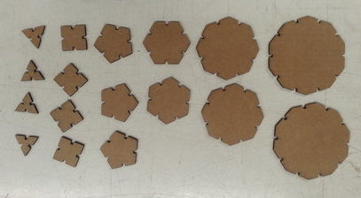
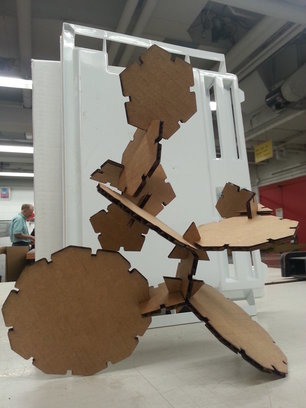
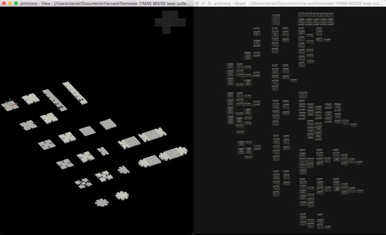
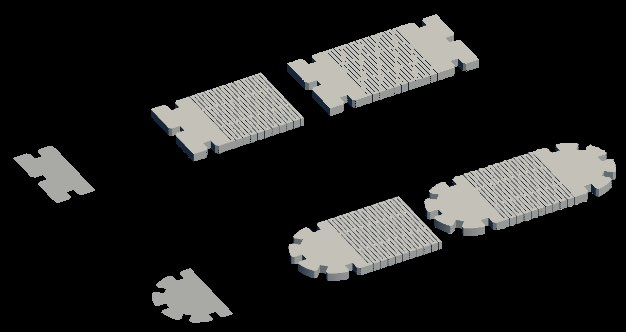
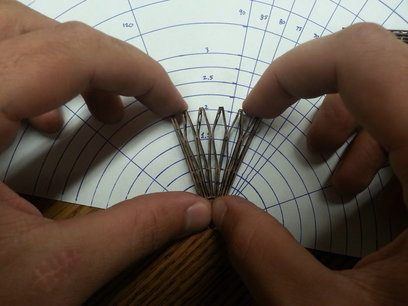
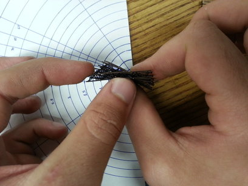
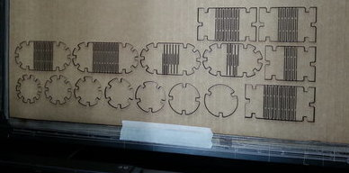
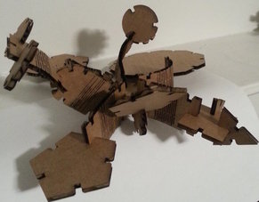
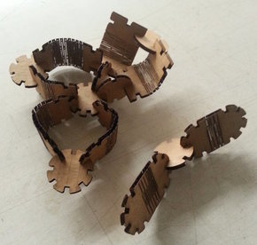
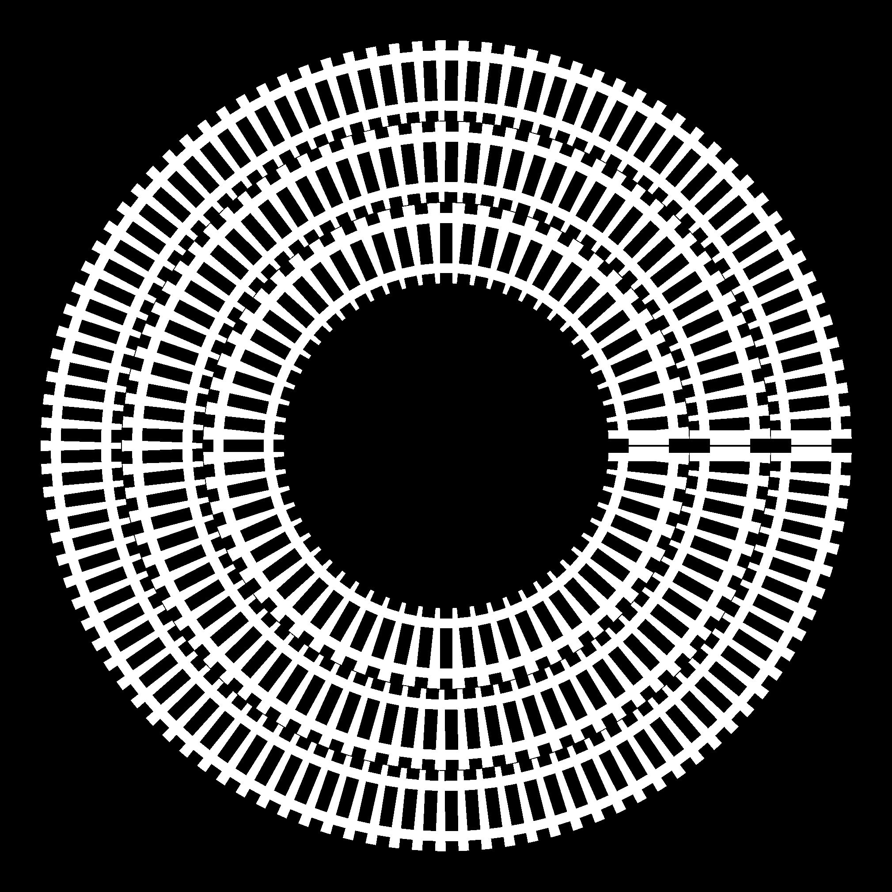

Maker Things
I've been playing with personal fabrication tools lately. A lot of this is connected to taking Neil Gershenfeld's class How to Make (Almost) Anything over at MIT. I'm writing projects up in detail on my HTMAA website (which has a few stylistic similarities to this one =P ), but here are some pictures.